20+ Crockpot Christmas Appetizers for Parties
📌 Save to PinterestA Christmas party runs on food that stays warm without a cook watching it. This roundup gathers twenty crockpot Christmas appetizers for parties — slow cooker dips, sliders, wings and bites that hold on warm all night, so you can actually enjoy your own party. Fill the slow cookers before the first guest arrives, set out the chips, rolls and toothpicks, and let the crockpot do the serving.
How to plan a crockpot party spread
Plan one dip, one slider or sandwich, and one finger food — that trio covers every guest. Dips hold best in a small slow cooker set to warm, and they reheat well, so make them first. Sliders and pulled pork feed a crowd from a single pot, and wings and drumsticks disappear fast, so make a double batch if your slow cooker is big enough. Keep toothpicks, small plates and napkins right beside each pot, and label anything spicy so guests know what they are reaching for.
Good to know: Everything is written in American English, and measurements use US customary units — cups, tablespoons, and Fahrenheit — for cooks in the United States. Always follow safe food-handling guidance, and check labels for allergens when cooking for others.
Food safety: cook poultry to 165°F (74°C) and ground sausage to 160°F (71°C). Cook shrimp until opaque. Heat pre-cooked smokies, sausage and corn dogs until steaming hot throughout. Never cook frozen meat in a slow cooker — thaw it first — and keep the lid on while cooking so the slow cooker stays hot enough. Refrigerate leftovers promptly. Check with a food thermometer — see the USDA chart at foodsafety.gov.
Dips, smokies & sausage bites
The warm dips and saucy bites that anchor any party table — scoopable, shareable and easy to keep warm.
1. Slow Cooker Cheesy Corn Dip

Sweet corn in a warm cheesy dip
Ingredients
- 3 cups corn kernels
- 8 oz cream cheese
- 1 cup shredded cheddar
- 1/2 cup sour cream
- 1 jalapeño
- 1 tsp chili powder
- tortilla chips
Directions
- Add corn, cream cheese, cheddar, sour cream, diced jalapeño and chili powder to a slow cooker.
- Cook on low 2 hours, stirring once.
- Serve warm with tortilla chips.
2. Slow Cooker Buffalo Cauliflower Bites
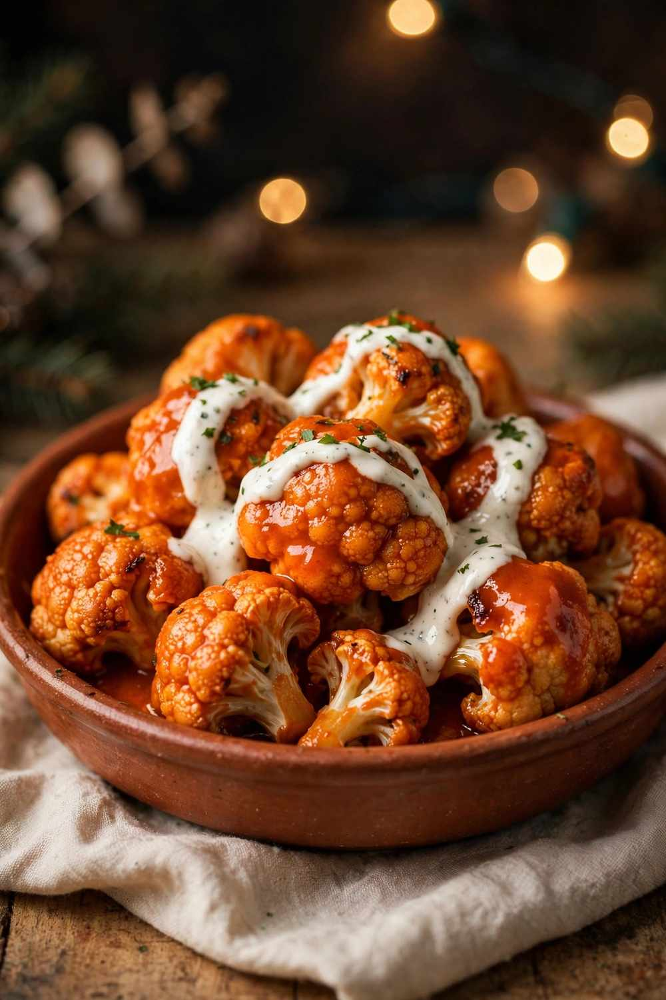
Spicy, saucy, crowd-friendly
Ingredients
- 1 head cauliflower
- 1/2 cup buffalo sauce
- 2 tbsp butter
- 1 tsp garlic powder
- 1/4 cup ranch dressing
- celery sticks
Directions
- Cut the cauliflower into florets and add them to a slow cooker.
- Toss with buffalo sauce, melted butter and garlic powder.
- Cook on low 2 hours until tender.
- Serve with ranch and celery sticks.
3. Slow Cooker Cocktail Smokies in Cranberry Barbecue Sauce
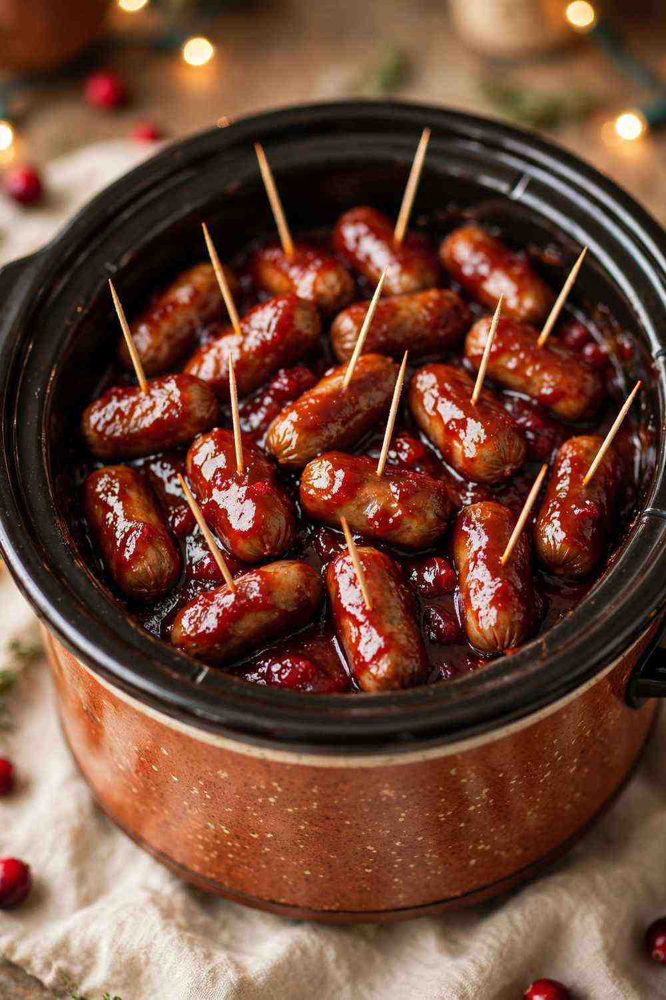
Sweet-tart smokies, hands-off
Ingredients
- 2 lbs cocktail smokies
- 1 can (14 oz) cranberry sauce
- 1 cup barbecue sauce
- 2 tbsp brown sugar
- 1 tsp chili powder
Directions
- Stir cranberry sauce, barbecue sauce, brown sugar and chili powder in a slow cooker.
- Add the smokies and coat.
- Cook on low 3 hours, stirring once.
- Serve warm with toothpicks.
Food safety: heat the smokies until steaming hot throughout.
4. Slow Cooker Teriyaki Sausage Bites

Sticky-sweet sausage, party-ready
Ingredients
- 2 lbs smoked sausage
- 1/2 cup teriyaki sauce
- 1/4 cup brown sugar
- 1 tbsp sesame seeds
- 2 green onions
Directions
- Slice the sausage into 1-inch pieces.
- Add sausage, teriyaki sauce and brown sugar to a slow cooker.
- Cook on low 3 hours, stirring once.
- Sprinkle with sesame seeds and green onions.
Food safety: heat the sausage until steaming hot throughout.
5. Slow Cooker Pizza Dip
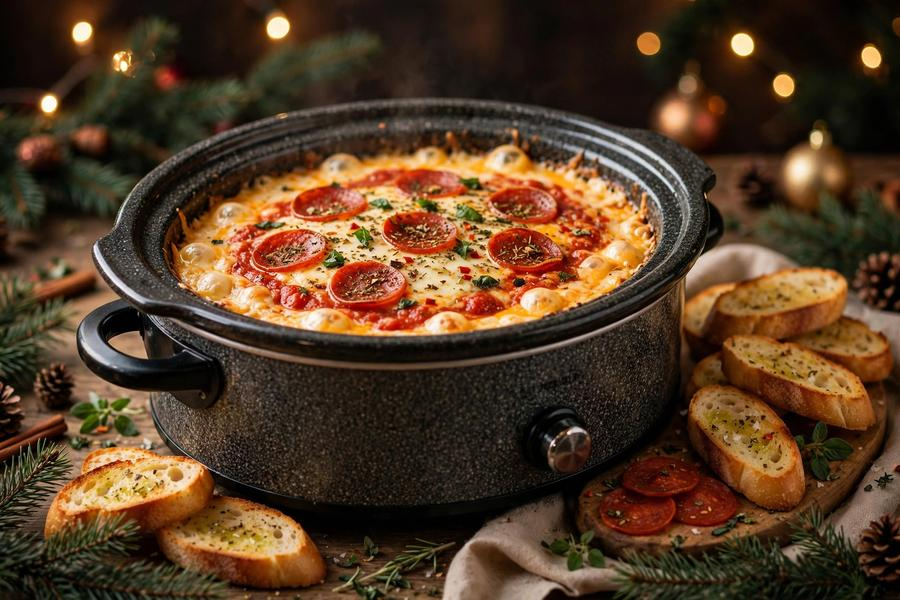
All the pizza flavor, scoopable
Ingredients
- 8 oz cream cheese
- 1 cup pizza sauce
- 1 cup shredded mozzarella
- 1/2 cup pepperoni
- 1 tsp Italian seasoning
- breadsticks
Directions
- Spread cream cheese in a slow cooker.
- Top with pizza sauce, mozzarella, pepperoni and Italian seasoning.
- Cook on low 2 hours until bubbly.
- Serve warm with breadsticks.
6. Slow Cooker Enchilada Dip

Creamy, cheesy, with a kick
Ingredients
- 2 cups shredded cooked chicken
- 1 can (10 oz) enchilada sauce
- 8 oz cream cheese
- 1 cup shredded cheddar
- 1 can (4 oz) green chiles
- tortilla chips
Directions
- Add chicken, enchilada sauce, cream cheese, cheddar and green chiles to a slow cooker.
- Cook on low 2 hours, stirring once.
- Serve warm with tortilla chips.
7. Slow Cooker Black Bean Dip
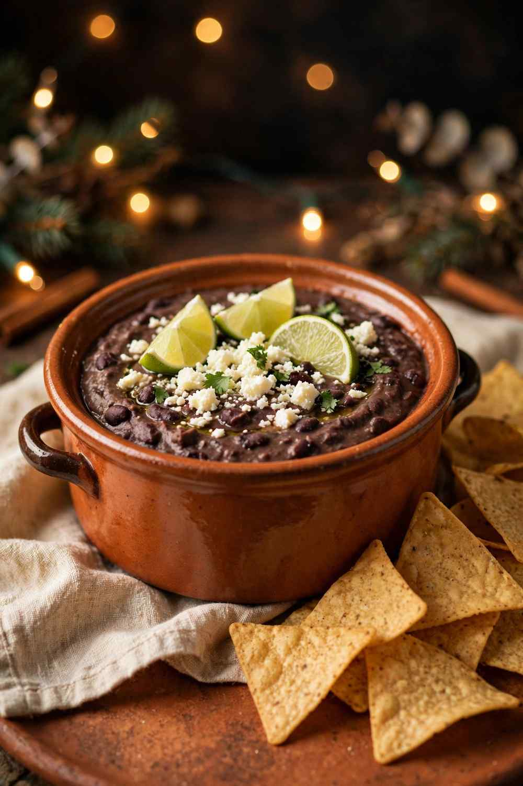
Smoky, creamy, scoopable
Ingredients
- 2 cans (15 oz) black beans
- 8 oz cream cheese
- 1 cup salsa
- 1 cup shredded cheddar
- 1 tsp cumin
- 1 tsp chili powder
- tortilla chips
Directions
- Drain and rinse one can of beans; mash the other.
- Add all the beans, cream cheese, salsa, cheddar, cumin and chili powder to a slow cooker.
- Cook on low 2 hours, stirring once.
- Serve warm with tortilla chips.
Wings, sliders & pulled pork
Sticky wings and saucy sliders — the hearty half of the party spread.
8. Slow Cooker Chicken Wings in Cranberry Chipotle Sauce
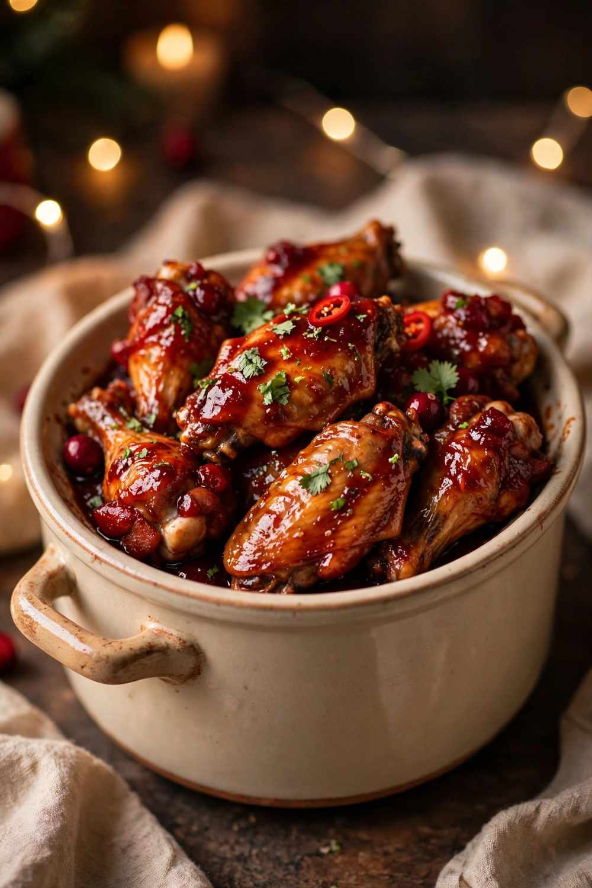
Sweet heat on tender wings
Ingredients
- 3 lbs chicken wings
- 1 can (14 oz) cranberry sauce
- 2 chipotle peppers in adobo
- 1/4 cup honey
- 2 tbsp soy sauce
- 2 garlic cloves
Directions
- Blend cranberry sauce, chipotles, honey, soy sauce and garlic into a sauce.
- Add wings and sauce to a slow cooker.
- Cook on low 4 hours until tender.
- Serve warm with the sauce spooned over.
Food safety: cook the chicken to 165°F (74°C) — check with a food thermometer.
9. Slow Cooker Barbecue Chicken Sliders
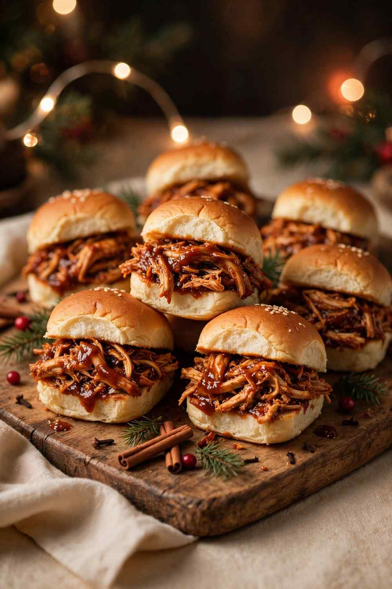
Saucy chicken on soft rolls
Ingredients
- 2 lbs chicken breasts
- 1 1/2 cups barbecue sauce
- 1 tbsp brown sugar
- 1 tsp smoked paprika
- 12 slider rolls
- coleslaw
Directions
- Add chicken, barbecue sauce, brown sugar and paprika to a slow cooker.
- Cook on low 5 hours.
- Shred the chicken and stir it back into the sauce.
- Pile onto rolls with coleslaw.
Food safety: cook the chicken to 165°F (74°C) — check with a food thermometer.
10. Slow Cooker Pulled Pork Sliders with Coleslaw
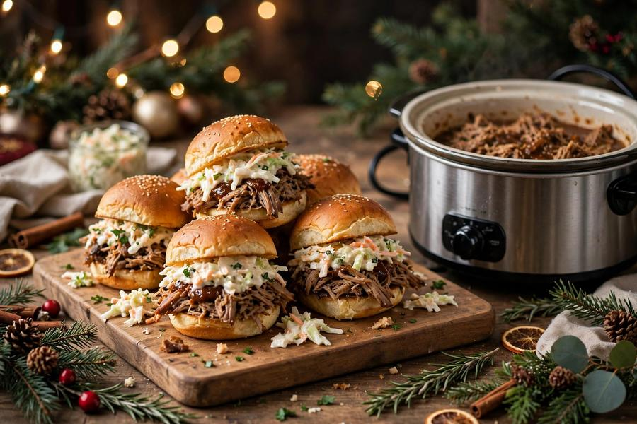
Tender pork, crunchy slaw
Ingredients
- 1 pork shoulder (3 lbs)
- 1 cup barbecue sauce
- 1 tbsp brown sugar
- 1 tsp garlic powder
- 12 slider rolls
- 2 cups coleslaw
Directions
- Rub the pork with brown sugar, garlic powder, salt and pepper.
- Cook on low 8 hours in a slow cooker until it shreds easily.
- Stir in the barbecue sauce.
- Pile onto rolls with coleslaw.
Food safety: cook the pork to 145°F (63°C) — pulled pork is done when tender.
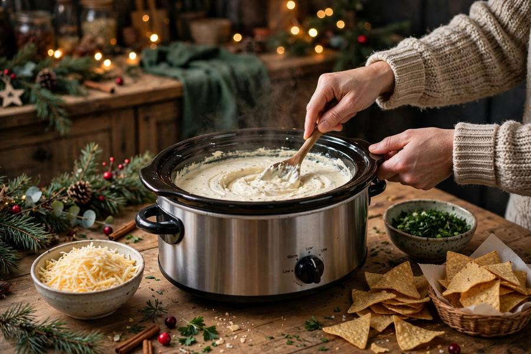
Spreads, jam & melty brie
Reuben dip, salsa verde chicken, bacon jam and a whole melty brie — spreads and showpieces for the table.
11. Slow Cooker Reuben Dip

All the deli flavor, warm and melty
Ingredients
- 8 oz cream cheese
- 1 cup shredded Swiss cheese
- 1 cup chopped corned beef
- 1/2 cup sauerkraut
- 1/4 cup Thousand Island dressing
- rye crackers
Directions
- Add cream cheese, Swiss, corned beef, sauerkraut and dressing to a slow cooker.
- Cook on low 2 hours, stirring once.
- Serve warm with rye crackers.
12. Slow Cooker Creamy Salsa Verde Chicken Dip
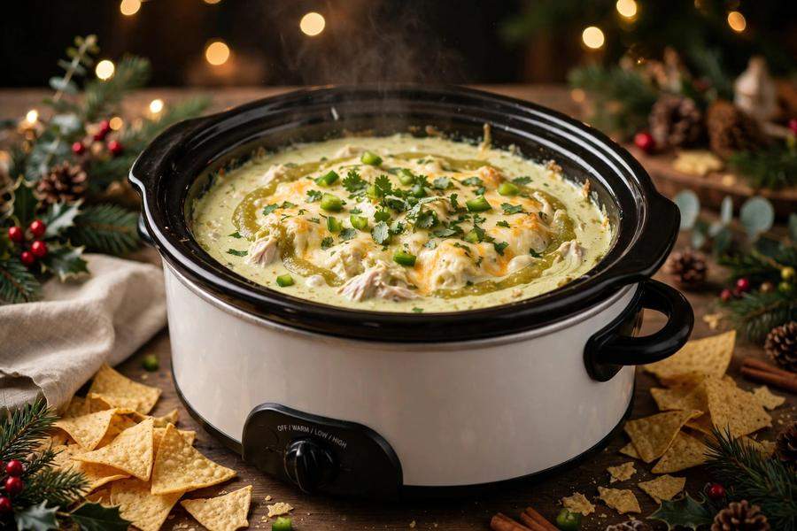
Tangy, creamy, scoopable
Ingredients
- 2 cups shredded cooked chicken
- 1 jar (16 oz) salsa verde
- 8 oz cream cheese
- 1 cup shredded Monterey Jack
- 1/4 cup chopped cilantro
- tortilla chips
Directions
- Add chicken, salsa verde, cream cheese and Monterey Jack to a slow cooker.
- Cook on low 2 hours, stirring once.
- Sprinkle with cilantro.
- Serve warm with tortilla chips.
13. Slow Cooker Hot Corn and Jalapeño Dip

Creamy corn with a jalapeño kick
Ingredients
- 3 cups corn kernels
- 8 oz cream cheese
- 1 cup shredded pepper jack
- 2 jalapeños
- 1/2 cup sour cream
- 1 tsp lime zest
- tortilla chips
Directions
- Add corn, cream cheese, pepper jack, diced jalapeños, sour cream and lime zest to a slow cooker.
- Cook on low 2 hours, stirring once.
- Serve warm with tortilla chips.
14. Slow Cooker Bacon Jam

Sweet, smoky, spreadable bacon
Ingredients
- 1 lb bacon
- 1 onion
- 1/2 cup brown sugar
- 1/4 cup maple syrup
- 2 tbsp apple cider vinegar
- 1 tsp smoked paprika
Directions
- Cook the bacon until crisp; crumble and set aside.
- Cook the onion in the drippings until soft.
- Add bacon, onion, brown sugar, maple syrup, vinegar and paprika to a slow cooker.
- Cook on low 3 hours.
- Pulse into a chunky jam and serve with crackers.
Food safety: cook the bacon until crisp.
15. Slow Cooker Fig and Walnut Brie

Melty brie under sweet fig
Ingredients
- 1 wheel (8 oz) brie
- 1/2 cup fig jam
- 1/4 cup chopped walnuts
- 1 tbsp honey
- crackers for serving
Directions
- Place the brie in a small slow cooker.
- Top with fig jam and walnuts.
- Cook on low 1 hour until soft.
- Drizzle with honey and serve with crackers.
Bites, drumsticks & shrimp
Mini corn dogs, honey garlic drumsticks, nacho dip and shrimp — the last round of party bites.
16. Slow Cooker Mini Corn Dogs

Fair food, party size
Ingredients
- 24 mini corn dogs
- 1/2 cup ketchup
- 1/4 cup yellow mustard
- 1 tbsp honey
- 1 tsp hot sauce
Directions
- Whisk ketchup, mustard, honey and hot sauce in a slow cooker.
- Add the corn dogs and coat.
- Cook on low 2 hours, stirring once.
- Serve warm with toothpicks.
Food safety: heat the corn dogs until steaming hot throughout.
17. Slow Cooker Chicken Drumsticks with Honey Garlic Glaze

Sticky, sweet drumsticks
Ingredients
- 3 lbs chicken drumsticks
- 1/2 cup honey
- 1/4 cup soy sauce
- 3 garlic cloves
- 1 tbsp rice vinegar
- 1 tsp sesame seeds
Directions
- Whisk honey, soy sauce, garlic and vinegar.
- Add drumsticks and sauce to a slow cooker.
- Cook on low 4 hours until tender.
- Sprinkle with sesame seeds before serving.
Food safety: cook the chicken to 165°F (74°C) — check with a food thermometer.
18. Slow Cooker Bacon Cheddar Dip
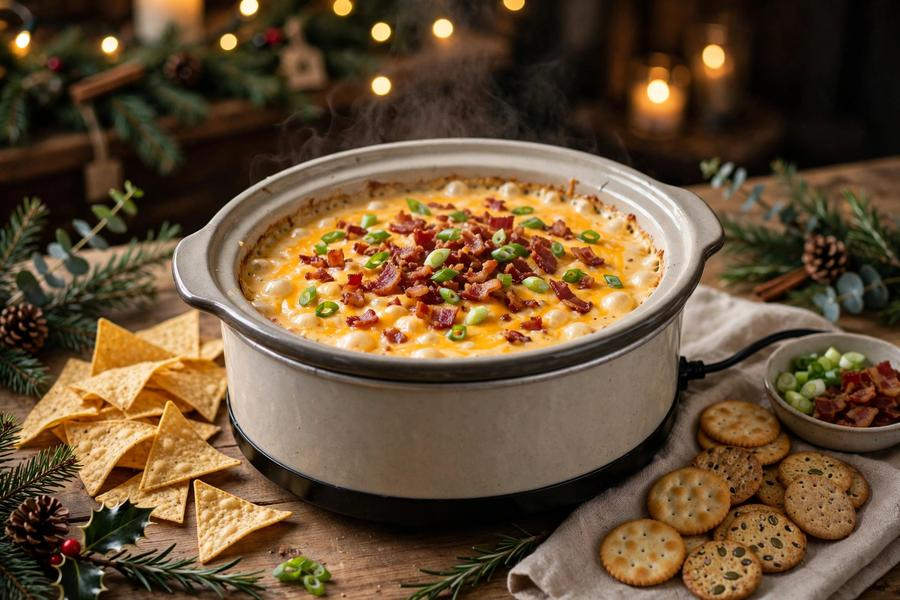
Smoky bacon, sharp cheddar
Ingredients
- 8 slices bacon
- 8 oz cream cheese
- 1 cup shredded cheddar
- 1/2 cup sour cream
- 2 green onions
- 1 tsp garlic powder
- crackers
Directions
- Cook the bacon until crisp; crumble and set aside.
- Add cream cheese, cheddar, sour cream, most of the bacon and garlic powder to a slow cooker.
- Cook on low 2 hours, stirring once.
- Top with the remaining bacon and green onions.
Food safety: cook the bacon until crisp.
19. Slow Cooker Chicken Nacho Dip

Creamy, cheesy, nacho-ready
Ingredients
- 2 chicken breasts
- 1 can (10 oz) diced tomatoes with green chiles
- 8 oz cream cheese
- 1 cup shredded cheddar
- 1 tsp taco seasoning
- tortilla chips
Directions
- Add chicken, tomatoes, cream cheese, cheddar and taco seasoning to a slow cooker.
- Cook on low 4 hours.
- Shred the chicken and stir everything together.
- Serve warm with tortilla chips.
Food safety: cook the chicken to 165°F (74°C) — check with a food thermometer.
20. Slow Cooker Honey Garlic Shrimp

Sweet, garlicky shrimp
Ingredients
- 1 lb shrimp
- 1/4 cup honey
- 3 garlic cloves
- 2 tbsp soy sauce
- 1 tbsp butter
- 1 tsp sesame seeds
- lemon wedges
Directions
- Whisk honey, garlic, soy sauce and melted butter.
- Add shrimp and sauce to a slow cooker.
- Cook on low 1 hour until the shrimp are pink and opaque.
- Sprinkle with sesame seeds and serve with lemon wedges.
Food safety: cook the shrimp until the flesh is pearly and opaque.
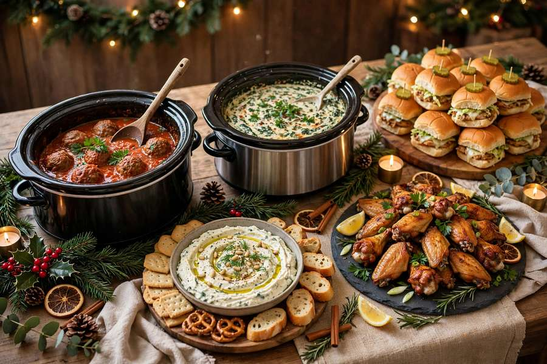
Make-ahead & serving tips
Set slow cookers to warm once the food is cooked through — it holds dips and bites at serving temperature without drying them out. Stir dips once an hour so the edges do not catch, and keep a lid on each pot between servings. Make sliders and pulled pork ahead and reheat them in the sauce; they only get better. Leftovers keep covered in the fridge for up to 3 days — reheat dips gently and bring meats back to steaming hot before serving.
Related articles
More roundups from the same table:
- 35+ Easy Christmas Appetizers for a Crowd — dips, bites, cheese boards and warm starters for your holiday party.
- 25+ Make Ahead Christmas Appetizers — party bites you can prep days before, from cheese balls and dips to pinwheels and stuffed mushrooms.
- 25+ Easy New Year's Eve Appetizers for a Crowd — bite-size party snacks, dips and finger foods for ringing in the New Year.
- 20+ Christmas Air Fryer Recipes for Easy Holiday Cooking — crispy appetizers, roasted vegetables and festive desserts.
Keep exploring
- Browse the Appetizers & Snacks roundups — starters, party bites and snacks for every gathering.
- Browse all six categories — breakfast, lunch and dinner, desserts, air fryer, healthy recipes, and appetizers.
- More about the kitchen — what The Tasty Recipe Co is and how it works.
About The Tasty Recipe Co: Learn how we research, organize and review our food collections — see our About Us and Editorial Policy pages.
Recipe results can vary with ingredients, equipment, and technique. See our Disclaimer for food-safety and allergy notes.